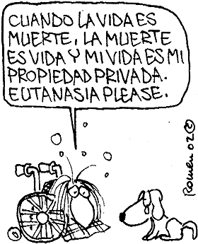
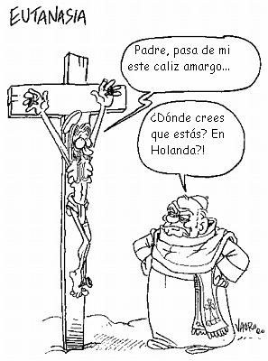

Este ensayo apareció por primera vez en el diario español EL PAÍS - Opinión - 12-04-2005.
A pesar del mágico encanto de la infancia y de la turbadora emoción de la pubertad, es hermoso crecer, hacerse adulto, vivir en sazón y plenitud, sentirse a gusto en la propia piel, usar la razón, pensar con lucidez, ejercer la autonomía, tomar en nuestras manos las riendas de nuestra propia vida.
Nadie nos preguntó cómo nacer, pero quizá podamos decidir cómo morir. Podemos ser los autores de nuestra biografía, podemos hacer que la película de nuestra vida acabe bien, a nuestro gusto. No hay necesidad de rodear el trance de la muerte de terrores, supersticiones y tabúes. También la muerte puede abordarse con serenidad y racionalidad.
La buena muerte o eutanasia (en griego, eu-thánatos) es el digno colofón de una buena vida. Cualquier vida es un proceso efímero, y todos tenemos una cita con la Parca. Pero también en una vida efímera, la única que hay, cabe la consciencia y la felicidad. Por desgracia, la mala muerte o cacotanasia (en griego, kako-thánatos) frustra muchas vidas humanas, echándolas a perder al final. En nuestra era tecnológica, la cacotanasia resulta con frecuencia del intento de alargar una vida que ya ha llegado a su fin, añadiendo un capítulo de infierno e indignidad a una biografía que podría haber sido satisfactoria. La dignidad de la vida humana estriba en no aceptar cualquier tipo de vida, sino sólo aquella que, en opinión del sujeto, vale la pena de ser vivida.
Aquí no hablamos de desengaños adolescentes ni de sórdidas conspiraciones de herederos codiciosos. Me refiero a adultos reflexivos en estado de deterioro físico tremendo e irreversible, que todavía conservan su juicio. Estos individuos han de ser tratados con respeto, como agentes autónomos y soberanos que son, como dueños de su propia vida. Si consideran que, a partir de cierto momento, el balance de satisfacciones y sufrimientos va a arrojar un saldo intolerablemente negativo, son ellos y sólo ellos los que deben decidir entre la eutanasia (el sueño inducido por barbitúricos seguido de la inyección letal) y la cacotanasia (el ensañamiento terapéutico con toda la parafernalia de la tecnología médica al servicio de una prolongación de su agonía o de su mala vida). ¿Quién osaría oponerse a su elección? ¿Quién tendría la desfachatez de arrogarse una autoridad superior sobre la vida del prójimo que la del prójimo mismo? Cuando, a pesar de todo, las instituciones y las leyes nos ningunean en tan grave trance, sólo nos puede salvar el amor, la ayuda de una mano amiga y desinteresada.

El Oscar a la mejor película y al mejor director de 2004 ha recaído en Million Dollar Baby, de Clint Eastwood. Maggie quiere llegar a ser campeona de boxeo, y, cuando está a punto de conseguirlo, sufre un feroz ataque que la deja tetrapléjica, con la columna deshecha y la pierna amputada. Esa muerte en vida, mantenida artificialmente, ya no tiene sentido para ella, que sólo desea morir de verdad, y lo desea con toda su alma. Aunque ella misma no puede moverse, al final obtiene la eutanasia de la mano de Frankie, su entrenador, el único que la quiere y la respeta, el único dispuesto a correr riesgos para que la voluntad de Maggie se cumpla.
También el Oscar a la mejor película extranjera, además de un montón de premios Goya, ha galardonado a otra película que celebra la eutanasia por amor, Mar adentro, de Alejandro Amenábar, basada además en hechos reales. Javier Bardem recrea el drama del tetrapléjico gallego Ramón Sampedro, al que un accidente dejó inmovilizado en 1968 y que quería morir. Como nadie se atrevía a ayudarle, pasó los cinco últimos años de su vida batallando inútilmente en los tribunales en busca de una autorización legal para morir dignamente y para que alguien pudiera ayudarle sin peligro. La historia acaba bien, pues una mujer buena y sencilla, Ramona Maneiro (en la película, Rosa), se enamora de él y cumple su voluntad, suministrándole el veneno en 1998.
Un caso distinto es el de los moribundos tan deteriorados, que ya ni siquiera están en posición de tomar decisión alguna. Lo digno y lo racional es dejarlos morir en paz y lo antes posible, asegurándose sobre todo de que no sufran ningún tipo de dolor en el proceso. Con frecuencia ocurre lo contrario. En algunos países, la mitad de todo el gasto sanitario se concentra en el último año de la vida de los ciudadanos, dedicándose sumas ingentes a alargar la agonía de los enfermos terminales. Ni los personajes famosos se salvan de este epílogo cruel. El 7 de marzo de 2005, el príncipe Rainiero de Mónaco ingresó en el Centro Cardio-Torácico de Montecarlo con fallos en el corazón, los riñones y los pulmones. Desde el 22 de marzo ya sólo sobrevivía conectado a un respirador artificial. Los partes médicos se limitaban a describir el pronóstico como “extremadamente reservado”. El 31 de marzo, el príncipe Alberto se hizo cargo de la regencia. De todos modos, todavía se mantuvo artificialmente en vida a Rainiero una semana más, hasta que los médicos se compadecieron de él y lo dejaron morir el 6 de abril.
Cuando los caballos sufrían un accidente fatal, los jinetes decentes acortaban su agonía con el famoso tiro de gracia. Al gorila albino Copito de Nieve lo querían mucho en el zoo de Barcelona; por eso cuando en 2003 su cáncer de piel era ya irreversible y su dolor arreciaba, sus cuidadores decidieron practicarle la eutanasia. Mucha gente comentó con envidia que ya les gustaría a ellos ser tratados como el gorila.
Un caso grotesco ha sido el de Terri Schiavo. En 1990 su cerebro sufrió un daño profundo e irreversible por una parada cardiaca. Desde entonces fue mantenida en vida como un vegetal humano. En 1998 su marido pidió que le retirasen los tubos. Aunque los jueces de todas las instancias dieron repetidamente la razón al marido, los políticos de la ultraderecha cristiana se interfirieron en los procesos judiciales para prolongar la vida vegetativa de Terri. En 2003 el Parlamento de Florida aprobó una ley especial, Terri’s Law, que autorizaba al gobernador Jeb Bush a ordenar la reinserción de los tubos que los jueces habían ordenado retirar, ley que Jeb firmó al instante y usó de inmediato para que el esperpento continuase. Un año después, el Tribunal Supremo de Florida declaró dicha ley inconstitucional. En febrero de 2005 el Congreso de los Estados Unidos se reunió precipitadamente en periodo de vacaciones para permitir que un tribunal federal volviera a intubar a Terri y el presidente George W. Bush regresó desde Texas en avión para firmar inmediatamente la ley. De todos modos, de nada sirvió tanta maniobra. El tribunal federal de apelación rechazó de nuevo la pretensión fundamentalista y ordenó que los tubos siguieran retirados. En ese clima exaltado nadie se atrevía a mencionar siquiera la eutanasia, así que finalmente se dejó que la pobre mujer muriera por deshidratación a lo largo de dos semanas.

La alternancia en el poder es típica de las democracias maduras y sirve para que cada partido corrija los excesos de su contrincante. Aunque el PP se ha modernizado, hasta ahora ha sido incapaz de romper sus amarras con el fundamentalismo de la jerarquía eclesiástica y de adoptar el laicismo de la moderna democracia liberal. Ha sido un espectáculo poco edificante el de algunos ministros y ministras relativamente liberales traicionando sus propias convicciones y tratando de imponer la religión católica como asignatura al mismo nivel que las matemáticas, o prohibiendo la prometedora investigación con células madre, o imponiendo las ideas de los obispos sobre el aborto o la eutanasia a una mayoría de los ciudadanos que ya no comulgan con esas piedras de molino. ¿Y qué decir de la reacción histérica del consejero de Sanidad de la Comunidad de Madrid, destituyendo fulminantemente al jefe del servicio de urgencias del Hospital Severo Ochoa, Luis Montes, por una denuncia anónima e ilegal de que la práctica habitual de la sedación terminal de los pacientes comatosos podría oler a eutanasia, enfrentándose a la opinión de los médicos, al comité de ética, al Colegio de Médicos y a la Sociedad Española de Cuidados Paliativos? Desde luego, si llego a verme en esa tesitura terminal, me gustaría contar con los servicios paliativos del dolor de un profesional competente y complaciente más bien que caer en las garras de un ideólogo cristiano ignorante de la medicina y empeñado en alargar mi agonía a toda costa.
El mejor servicio que el PSOE puede prestar ahora a la democracia española consiste en corregir esos excesos del fervor religioso, como ya lo está haciendo en el tema de las células madre o del divorcio, pero como todavía no se atreve a hacer con el aborto o la eutanasia. Envalentonada por la actitud pusilánime del Gobierno, en noviembre de 2004 la Conferencia Episcopal lanzó una campaña de agitación a favor de la cacotanasia, llegando a imprimir siete millones de panfletos que identificaban la eutanasia con el homicidio. Confundir la eutanasia con el homicidio es como confundir el amor con la violación, o el regalo con el robo, o lo voluntario con lo forzado. No hay argumentos, ni siquiera bíblicos, para defender la postura eclesiástica. La actual problemática viene planteada por el progreso de la tecnología médica, que es muy reciente y sobre el que la Biblia no dice nada. A falta de argumentos, la jerarquía imparte insultos urbi et orbi, tildando de homicidas a cuantos discrepan de sus peregrinas opiniones.
El autor, Jesús Mosterín, es filósofo y profesor de Investigación en el Instituto de Filosofía del CSIC.
Volver a la sección Sociedad y religión
Comentarios
Comments powered by Disqus